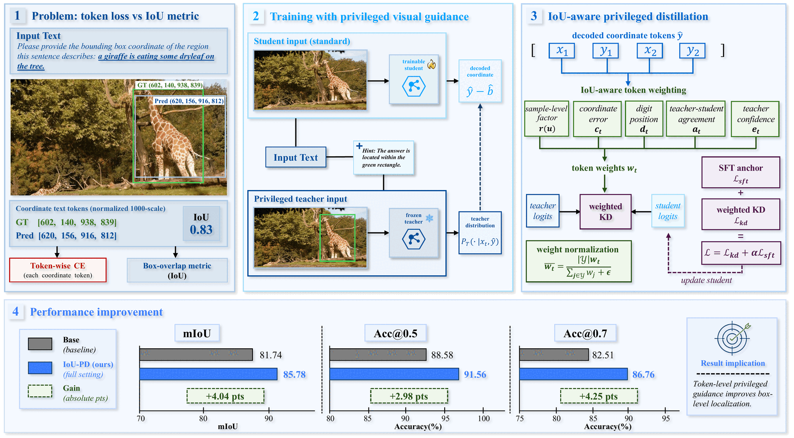
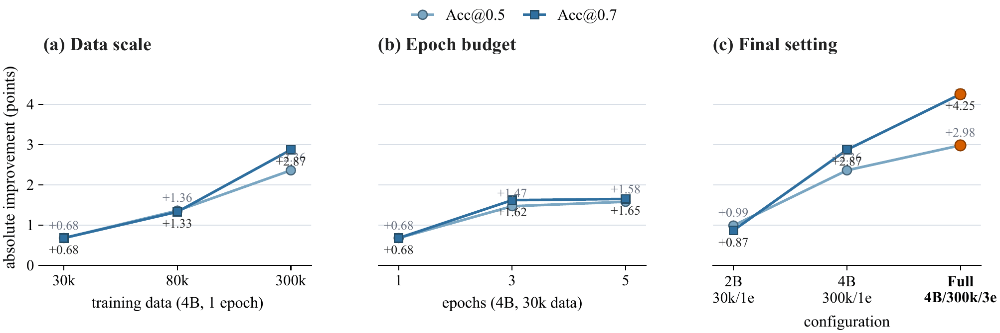
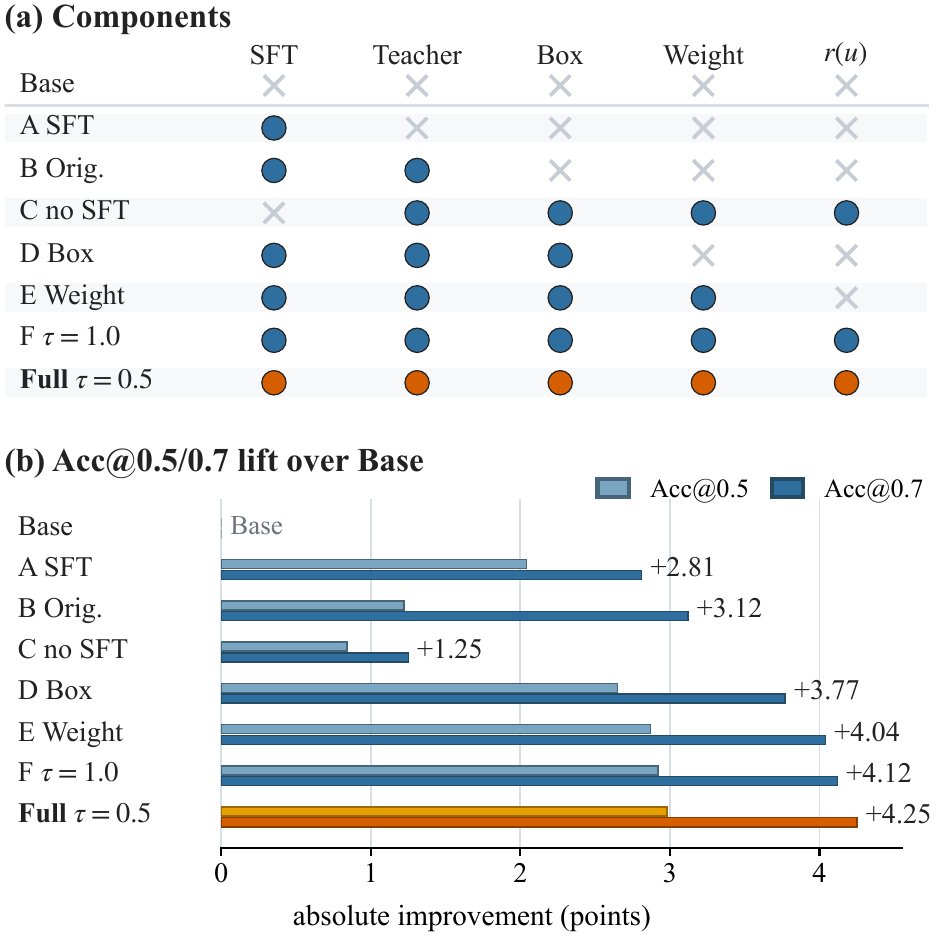
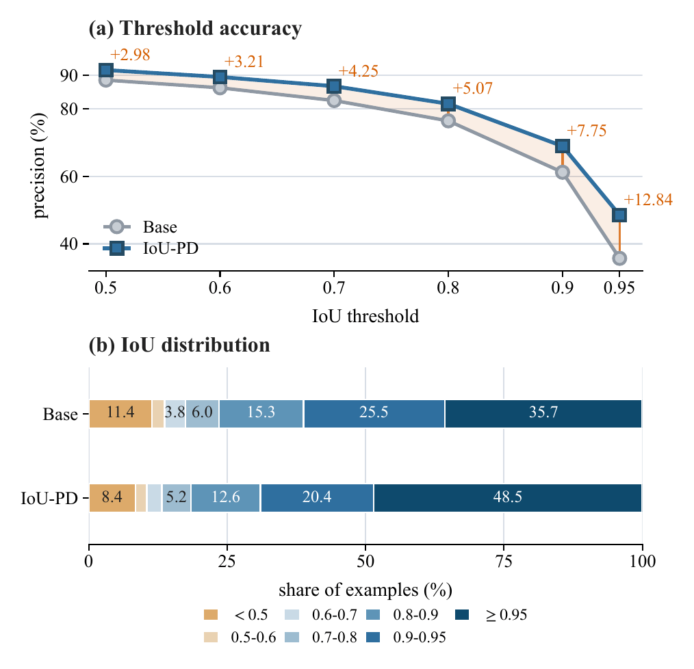
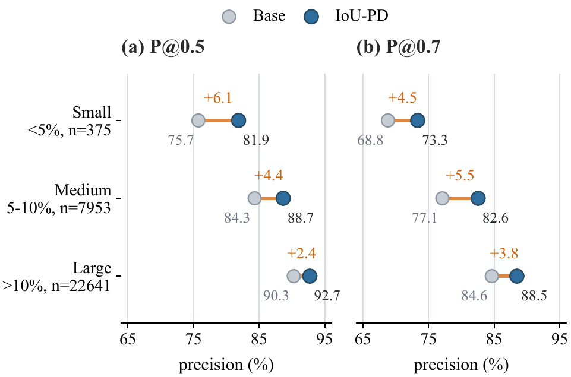
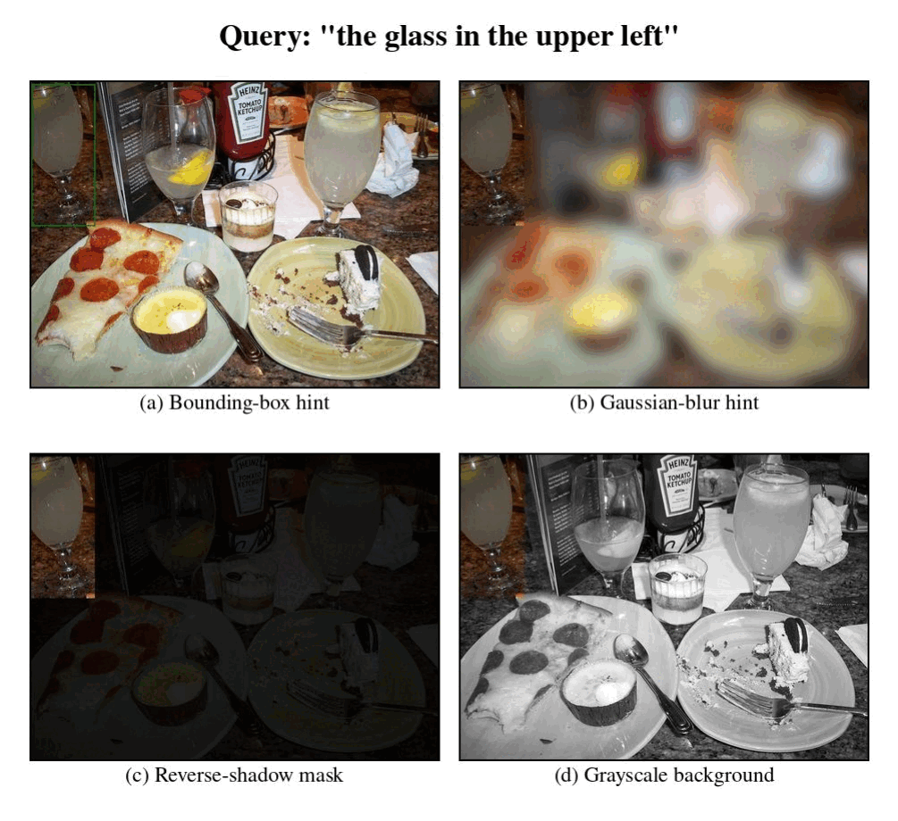
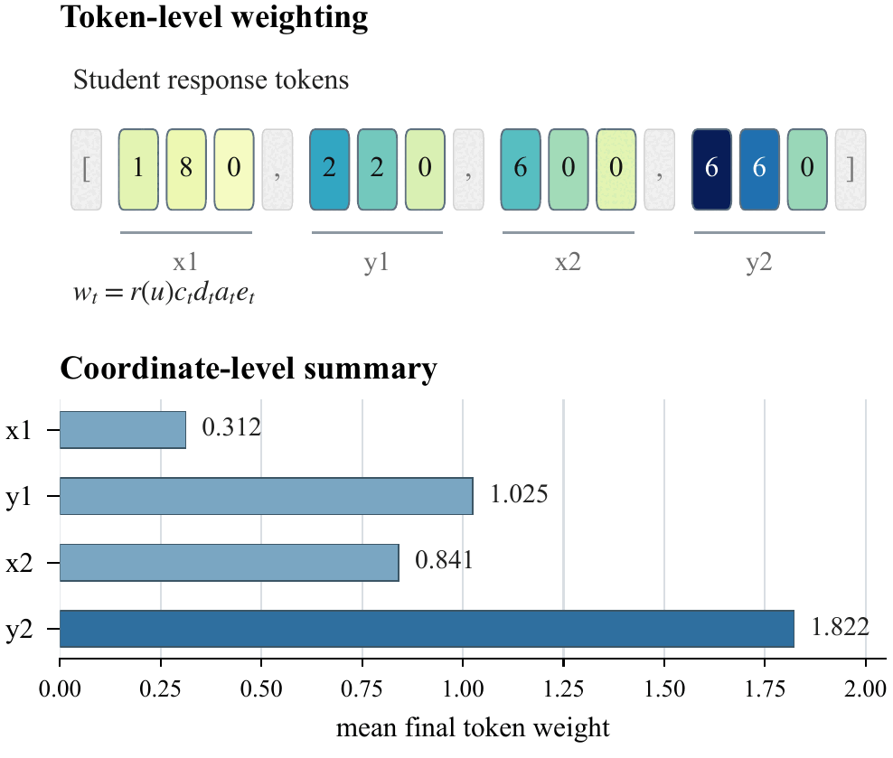

Image + referring expression
IoU-PD: IoU-Aware Privileged Distillation for Visual Grounding with Multimodal Large Language Models
Ground-truth boxes guide a privileged teacher during training, while the deployed student keeps the standard image-and-text grounding interface.
1 University of Chinese Academy of Sciences
2 State Key Laboratory of Communication Content Cognition
3 Peng Cheng Laboratory
4 National University of Singapore
Privileged information is used only during training
One student, two training views
Student-only inference
Box-marked image + location hint
SFT anchor
Privileged KL distillation
IoU-aware token weights
Inference
Original image + prompt → student → bounding box
No box overlay, teacher branch, or additional prediction module
01
Abstract
Visual grounding with multimodal large language models is commonly formulated as autoregressive coordinate generation, where a model outputs bounding-box coordinates as text given an image and a referring-expression prompt. While this interface is simple and compatible with instruction following, it introduces a mismatch between training and evaluation: training optimizes token-level likelihood over coordinate strings, whereas grounding quality is measured by geometric overlap. We propose IoU-PD, an IoU-aware privileged distillation method for coordinate-generating multimodal large language models. IoU-PD uses ground-truth boxes not only as coordinate targets, but also as privileged training-time guidance. During training, the student receives the original image and prompt, while a frozen teacher receives a box-marked image and an augmented prompt that indicates the marked region. The student is trained with a supervised fine-tuning anchor and a privileged distillation loss whose token weights reflect both geometric importance and teacher reliability. At inference time, IoU-PD requires no box overlay, privileged hint, teacher branch, or additional prediction module. Experiments on standard referring-expression grounding benchmarks show consistent region-level improvements over strong coordinate-generating baselines, demonstrating that ground-truth boxes can provide useful privileged guidance beyond serving as coordinate labels.
02
Training should reflect geometry
Coordinate generation is trained as next-token prediction, but evaluated by the overlap between two regions. IoU-PD introduces geometric information into training while preserving the generative format.
Coordinate SFT
label only
Image + query
Coordinate string
The ground-truth box supplies the output tokens. Token likelihood does not directly describe the geometric quality of the predicted region.
IoU-PD
label + privileged guidance
Coordinate target
Box-marked teacher view
Geometry-aware token weights
The same box also guides a frozen teacher. Distillation then transfers this training-only information to the student according to geometric importance and teacher reliability.
Privileged training viewThe teacher sees a box-marked image and a short hint.
Extra inference modulesDeployment uses the original student input and output.
Held-out evaluation splitsRefCOCO, RefCOCOg, and RefCOCO+ benchmarks.
03
IoU-aware privileged distillation
IoU-PD combines direct coordinate supervision with a frozen privileged teacher and token-level weighting that connects distillation to region quality.
Privileged teacher
The teacher receives a bounding-box overlay and a short hint while the student receives the original input.
SFT anchor
Supervised coordinate generation maintains the output format and anchors the grounding distribution.
IoU-aware weighting
Sample quality, coordinate error, digit significance, agreement, and confidence determine token weights.

04
Consistent region-level gains
Under the matched Qwen3-VL-4B setting, IoU-PD improves the pooled result and every held-out split across mIoU, Acc@0.5, and Acc@0.7.
Matched 4B comparison
Base → IoU-PD
| Evaluation split | mIoU | Acc@0.5 | Acc@0.7 | |||
|---|---|---|---|---|---|---|
| Base | IoU-PD | Base | IoU-PD | Base | IoU-PD | |
| Overall | 81.74 | 85.78 | 88.58 | 91.56 | 82.51 | 86.76 |
| RefCOCO testA | 85.90 | 88.45 | 93.25 | 95.19 | 88.56 | 91.44 |
| RefCOCO testB | 81.45 | 84.20 | 88.85 | 90.95 | 81.33 | 84.14 |
| RefCOCOg test | 81.85 | 87.23 | 88.31 | 91.45 | 82.18 | 87.34 |
| RefCOCO+ testA | 83.79 | 87.14 | 90.85 | 93.59 | 85.98 | 89.91 |
| RefCOCO+ testB | 74.64 | 79.88 | 80.73 | 85.80 | 73.33 | 79.28 |
Values are percentages. Overall results pool all examples from the five held-out splits.

05
Where the gains come from
Component, threshold, and object-size analyses show that the improvement is distributed across the evaluated conditions rather than confined to one metric or subset.



06
Inside the training signal
The visual hint preserves the scene while identifying the target. The token-weighting rule then allocates the distillation signal according to geometry and confidence.


07
Citation
If this work supports your research, please cite the paper.
@article{zhu2026ioupd,
title = {IoU-PD: IoU-Aware Privileged Distillation for Visual Grounding with Multimodal Large Language Models},
author = {Zhu, Xiuyuan and Lu, Ke and Wu, Hao and Jiao, Siwen and Du, Zijin and Zhang, Dongming and Xue, Jian},
journal = {arXiv preprint arXiv:2607.15732},
year = {2026}
}
08
Contact
For questions about the paper, code, or model, please contact us by email.
Email
zhuxiuyuan22@mails.ucas.edu.cn